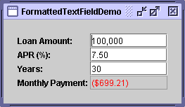
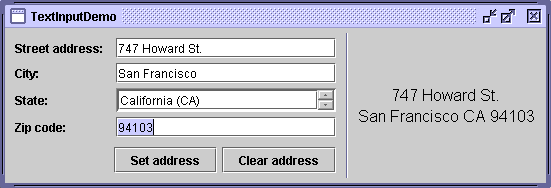
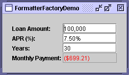
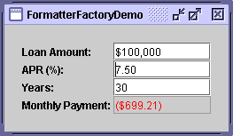

Feedback Form
|
|
Start of Tutorial > Start of Trail > Start of Lesson |
Search
Feedback Form |
Release 1.4 introduced a subclass ofJTextFieldcalledJFormattedTextField. Formatted text fields provide a way for developers to specify the legal set of characters that can be entered into a text field. Specifically,
JFormattedTextFieldadds a formatter and an object value to the features inherited fromJTextField. The formatter performs the translation from the field's value into the text it displays, and vice versa.Using the formatters Swing provides, you can set up formatted text fields for easy input of dates and numbers in localized formats. Another kind of formatter lets you use a character mask to specify the set of characters that can be entered at each position in the field. For example, you can specify a mask for entering phone numbers in a particular format, such as (XX) X-XX-XX-XX-XX.
Version note: Before 1.4, text field formatting required more effort. You could check the field's value when the user pressed Enter by putting format-checking code in your action listener, but you couldn't do any checking before the action event was generated unless you implemented a custom model (Document) for the text field. 1.3 introduced input verification, but that isn't specialized for text fields and is tied to focus changes.
If the possible values of a formatted text field have an obvious order, consider using a spinner instead. A spinner uses a formatted text field, by default, but adds two buttons that let the user step through a sequence of values.
Another alternative or adjunct to using a formatted text field is installing an input verifier
Here is a picture of a GUI that uses formatted text fields to display numbers in four different formats.
 You can find the full code in
Try this:
- Run FormattedTextFieldDemo using JavaTM Web Start
- Experiment with different loan amounts, annual percentage rates (APR), and loan lengths.
Note that the Month Payment field is updated when you either press Enter or move the focus out of the field you're editing, as long as the text you type is valid.- Enter invalid text such as "abcd" in the Loan Amount field and then press Enter.
Nothing happens. When you move the focus from the field, the text reverts to the field's last valid value.- Enter marginally valid text such as "2000abcd" in the Loan Amount field and press Enter.
The Monthly Payment field is updated, though the Loan Amount field still looks strange. When you move the focus from the Loan Amount field, the text it displays is updated to be a nicely formatted version of its value — for example, "2,000".FormattedTextFieldDemo.java. Here is the code that creates the first field:
amountField = new JFormattedTextField(amountFormat); amountField.setValue(new Double(amount)); amountField.setColumns(10); amountField.addPropertyChangeListener("value", this); ... amountFormat = NumberFormat.getNumberInstance();The constructor used to create
amountFieldtakes ajava.text.Formatargument. TheFormatobject is used by the field's formatter to translate between the field's text and value.The rest of the code sets up
amountField. ThesetValuemethod sets the field's value property to a floating point number represented as aDoubleobject. ThesetColumnsmethod, inherited fromJTextField, provides a hint as to the preferred size of the field. Finally, the call toaddPropertyChangeListenerregisters a listener for the value property of the field, so the program can update the Monthly Payment field whenever the user changes the loan amount.The rest of this section covers the following topics:
- Creating and Initializing Formatted Text Fields
- Setting and Getting the Field's Value
- Specifying Formats
- Using MaskFormatter
- Specifying Formatters and Using Formatter Factories
This section doesn't explain the API inherited from
JTextField. That API is described in How to Use Text Fields.
The following code creates and initializes the remaining three fields in FormattedTextFieldDemo.
rateField = new JFormattedTextField(percentFormat); rateField.setValue(new Double(rate)); rateField.setColumns(10); rateField.addPropertyChangeListener("value", this); numPeriodsField = new JFormattedTextField(); numPeriodsField.setValue(new Integer(numPeriods)); numPeriodsField.setColumns(10); numPeriodsField.addPropertyChangeListener("value", this); paymentField = new JFormattedTextField(paymentFormat); paymentField.setValue(new Double(payment)); paymentField.setColumns(10); paymentField.setEditable(false); paymentField.setForeground(Color.red); ... percentFormat = NumberFormat.getNumberInstance(); percentFormat.setMinimumFractionDigits(2); paymentFormat = NumberFormat.getCurrencyInstance();The code for setting up
numPeriodsFieldis almost identical to the code you saw before. The only difference is that the format is slightly different, thanks to the codepercentFormat.setMinimumFractionDigits(2).The code that creates
numPeriodsFielddoesn't explicitly set a format or formatter. Instead, it sets the value to anIntegerand lets the field use the default formatter forIntegers. We couldn't do this in the previous two fields because we didn't want to use the default formatter forDoubles; the result didn't look exactly like we wanted it to. We'll discuss how to specify formats and formatters a little later.The payment field is different from the other fields because it's uneditable, uses a different color for its text, and doesn't happen to have a property change listener. However, it's otherwise the same as the other fields. We could have chosen to use a text field or label instead. Whatever the component, we could still use
paymentFormatto parse the payment amount into the text to be displayed.
Keep this in mind when using a formatted text field:
A formatted text field's text and its value are two different properties, and the value often lags the text.
The text property is defined by
JTextField; it always reflects what the field displays. The value property, defined byJFormattedTextField, might not reflect the latest text displayed in the field. While the user is typing, the text property changes, but the value property doesn't until the changes are committed.To be more precise, the value of a formatted text field can be set using either the
setValuemethod or thecommitEditmethod. ThesetValuemethod sets the value to the specified argument. Although the argument can technically be anyObject, it needs to be something that the formatter can convert into a string. Otherwise, the text field won't display anything useful.The
commitEditmethod sets the value to whatever object the formatter determines is represented by the field's text. ThecommitEditmethod is automatically called when either of the following happens:
- When the user presses Enter while the field has the focus.
- By default, when the field loses the focus — for example, the user presses Tab to change the focus to another component. You can use the
setFocusLostBehaviormethod to specify that something different should happen when the field loses the focus.
Note: Some formatters might update the value constantly, making the focus-lost behavior moot since the value will always be the same as what the text specifies.When you set the value of a formatted text field, the field's text is updated to reflect the value. Exactly how the value is represented as text depends on the field's formatter.
Note that although
JFormattedTextFieldinherits thesetTextmethod fromJTextField, you don't usually invokesetTexton a formatted text field. If you do, the field's display will change accordingly but the value will not be updated (unless the field's formatter updates it constantly).To get a formatted text field's current value, use the
getValuemethod. If necessary, you can ensure the value reflects the text by callingcommitEditbeforegetValue. BecausegetValuereturns anObject, you need to cast it to the type used for your field's value. For example:Date enteredDate = (Date)dateField.getValue();To detect changes in a formatted text field's value, you can register a property change listener on the formatted text field to listen for changes to the "value" property. Here is the property change listener from FormattedTextFieldDemo:
//The property change listener is registered on each //field using code like this: // someField.addPropertyChangeListener("value", this); /** Called when a field's "value" property changes. */ public void propertyChange(PropertyChangeEvent e) { Object source = e.getSource(); if (source == amountField) { amount = ((Number)amountField.getValue()).doubleValue(); } else if (source == rateField) { rate = ((Number)rateField.getValue()).doubleValue(); } else if (source == numPeriodsField) { numPeriods = ((Number)numPeriodsField.getValue()).intValue(); } double payment = computePayment(amount, rate, numPeriods); paymentField.setValue(new Double(payment)); }
TheFormatInternationalFormatterDateFormatterNumberFormatterFormatobjects to translate between the field's text and value. You can get aFormatobject by invoking one of the factory methods inDateFormatNumberFormatSimpleDateFormat
Note: A third commonly used formatter class,MaskFormatter, does not descend fromInternationalFormatterand does not use formats. It's discussed in Using MaskFormatter.You can customize certain format aspects when you create the
Format, and others through format-specific API. For example,DecimalFormatNumberFormatand are often returned by its factory methods, can be customized using thesetMaximumFractionDigitsandsetNegativePrefixmethods. For information about usingFormats, see the FormattingThe easiest way to associate a customized format with a formatted text field is to create the field using the
JFormattedTextFieldconstructor that takes aFormatas an argument. You can see this in the previous code snippets that createamountFieldandrateField.
TheMaskFormatterMaskFormatterthat lets the user enter a 5-digit zip code:You can try out the results of the preceding code by running TextInputDemo using Java Web StartzipField = new JFormattedTextField( createFormatter("#####")); ... protected MaskFormatter createFormatter(String s) { MaskFormatter formatter = null; try { formatter = new MaskFormatter(s); } catch (java.text.ParseException exc) { System.err.println("formatter is bad: " + exc.getMessage()); System.exit(-1); } return formatter; } [PENDING: This snapshot needs to be retaken, since the GUI has changed slightly.]The following table shows the characters you can use in the formatting mask:
Character Description # Any valid number ( Character.isDigit).'
(single quote)Escape character, used to escape any of the special formatting characters. U Any character ( Character.isLetter). All lowercase letters are mapped to uppercase.L Any character ( Character.isLetter). All uppercase letters are mapped to lowercase.A Any character or number ( Character.isLetterorCharacter.isDigit).? Any character ( Character.isLetter).* Anything. H Any hex character (0-9, a-f or A-F).
When specifying formatters, keep in mind that each formatter object can be used by at most one formatted text field at a time. Each field should have at least one formatter associated with it, of which exactly one is used at any time.You can specify the formatters to be used by a formatted text field in several ways:
- Use the
JFormattedTextFieldconstructor that takes aFormatargument.
A formatter for the field is automatically created that uses the specified format.
- Use the
JFormattedTextFieldconstructor that takes aJFormattedTextField.AbstractFormatterargument.
The specified formatter is used for the field.
- Set the value of a formatted text field that has no format, formatter, or formatter factory specified.
A formatter is assigned to the field by the default formatter factory, using the type of the field's value as a guide. If the value is aDate, the formatter is aDateFormatter. If the value is aNumber, the formatter is aNumberFormatter. Other types result in an instance ofDefaultFormatter.
- Make the formatted text field use a formatter factory that returns customized formatter objects.
This is the most flexible approach. It's useful when you want to associate more than one formatter with a field or add a new kind of formatter to be used for multiple fields. As an example of the former use, you might have a field that should interpret user typing a certain way but display the value (when the user isn't typing) another way. As an example of the latter use, you might have several fields that have values of a custom class — say,PhoneNumber. You could set up the fields to use a formatter factory that can return specialized formatters for phone numbers.You can set a field's formatter factory either by creating the field using a constructor that takes a formatter factory argument, or by invoking the
setFormatterFactorymethod on the field. To create a formatter factory, you can often use an instance ofDefaultFormatterFactoryDefaultFormatterFactoryobject lets you specify the formatters returned when a value is being edited, not being edited, or has a null value.The following pictures show an application based on FormattedTextFieldDemo that uses formatter factories to set multiple editors for the Loan Amount and APR fields. While the user is editing the Loan Amount, the $ character is not used so that the user isn't forced to enter it. Similarly, while the user is editing the APR field, the % is not required. You can run the example using Java Web Start
 
Here is the code that creates the formatters and sets them up, using instances of
DefaultFormatterFactory:The boldface code highlights the calls toprivate double rate = .075; //7.5 % ... amountField = new JFormattedTextField( new DefaultFormatterFactory( new NumberFormatter(amountDisplayFormat), new NumberFormatter(amountDisplayFormat), new NumberFormatter(amountEditFormat))); ... NumberFormatter percentEditFormatter = new NumberFormatter(percentEditFormat) { public String valueToString(Object o) throws ParseException { Number number = (Number)o; if (number != null) { double d = number.doubleValue() * 100.0; number = new Double(d); } return super.valueToString(number); } public Object stringToValue(String s) throws ParseException { Number number = (Number)super.stringToValue(s); if (number != null) { double d = number.doubleValue() / 100.0; number = new Double(d); } return number; } }; rateField = new JFormattedTextField( new DefaultFormatterFactory( new NumberFormatter(percentDisplayFormat), new NumberFormatter(percentDisplayFormat), percentEditFormatter)); ... amountDisplayFormat = NumberFormat.getCurrencyInstance(); amountDisplayFormat.setMinimumFractionDigits(0); amountEditFormat = NumberFormat.getNumberInstance(); percentDisplayFormat = NumberFormat.getPercentInstance(); percentDisplayFormat.setMinimumFractionDigits(2); percentEditFormat = NumberFormat.getNumberInstance(); percentEditFormat.setMinimumFractionDigits(2);DefaultFormatterFactoryconstructors. The first argument to the constructor specifies the default formatter to use for the formatted text field. The second specifies the display formatter, which is used when the field doesn't have the focus. The third specifies the edit formatter, used when the field has the focus. The code doesn't use a fourth argument, but if it did, it would specify the null formatter, which is used when the field's value is null. Because no null formatter is specified, the default formatter is used when the value is null.The code customizes the formatter that uses
percentEditFormatby creating a subclass ofNumberFormatter. This subclass overrides thevalueToStringandstringToValuemethods ofNumberFormatterso that they convert the displayed number to the value actually used in calculations, and vice versa. Specifically, the displayed number is 100 times the actual value. The reason is that the percent format used by the display formatter automatically displays the text as 100 times the value, so the corresponding editor formatter must do so as well. FormattedTextFieldDemo doesn't need to worry about this conversion because it uses only one format for both display and editing.You can find the code for the entire program in
FormatterFactoryDemo.java
The following tables list some of the commonly used API for using formatted text fields.
Classes Related to Formatted Text Fields Class or Interface Purpose JFormattedTextFieldSubclass of JTextFieldthat supports formatting arbitrary values.JFormattedTextField.AbstractFormatterThe superclass of all formatters for JFormattedTextField. A formatter enforces editing policies and navigation policies, handles string-to-object conversions, and manipulates theJFormattedTextFieldas necessary to enforce the desired policy.JFormattedTextField.AbstractFormatterFactoryThe superclass of all formatter factories. Each JFormattedTextFielduses a formatter factory to obtain the formatter that best corresponds to the text field's state.DefaultFormatterFactoryThe formatter factory normally used. Dishes out formatters based on details such as the passed-in parameters and focus state. DefaultFormatterSubclass of JFormattedTextField.AbstractFormatterthat formats arbitrary objects using thetoStringmethod.MaskFormatterSubclass of DefaultFormatterthat formats and edits strings using a specified character mask. (For example, 7-digit phone numbers can be specified using "###-####".)InternationalFormatterSubclass of DefaultFormatterthat uses an instance ofjava.text.Formatto handle conversion to and from aString.NumberFormatterSubclass of InternationalFormatterthat supports number formats using an instance ofNumberFormat.DateFormatterSubclass of InternationalFormatterthat supports date formats using an instance ofDateFormat.
JFormattedTextField Methods Method or Constructor Purpose JFormattedTextField()
JFormattedTextField(Object)
JFormattedTextField(Format)
JFormattedTextField(AbstractFormatter)
JFormattedTextField(AbstractFormatterFactory)
JFormattedTextField(AbstractFormatterFactory, Object)Create a new formatted text field. The Objectargument, if present, specifies the initial value of the field and causes an appropriate formatter factory to be created. TheFormatorAbstractFormatterargument specifies the format or formatter to be used for the field, causing an appropriate formatter factory to be created. TheAbstractFormatterFactoryargument specifies the formatter factory to be used, which determines which formatters are used for the field.void setValue(Object)
Object getValue()Set or get the value of the formatted text field. You must cast the return type based on how the JFormattedTextFieldhas been configured. If the formatter hasn't been set yet, invokingsetValuesets the formatter to one returned by the field's formatter factory.void setFormatterFactory(AbstractFormatterFactory)Set the object that determines the formatters used for the formatted text field. It is often an instance of DefaultFormatterFactory.AbstractFormatter getFormatter()Get the formatter of the formatted text field. It is often an instance of DefaultFormatter.void setFocusLostBehavior(int)Specifies what should happen when the field loses the focus. Possible values are defined in JFormattedTextFieldasCOMMIT_OR_REVERT(the default),COMMIT(commit if valid, otherwise leave everything the same),PERSIST(do nothing), andREVERT(change the text to reflect the value).void commitEdit()Sets the value to the object represented by the field's text (as determined by the field's formatter). If the text is invalid, the value remains the same and a ParseExceptionboolean isEditValid()Returns true if the formatter considers the current text to be valid (as determined by the field's formatter).
DefaultFormatter Options Method Purpose void setCommitsOnValidEdit(boolean)
boolean getCommitsOnValidEdit()Set or get when edits are pushed back to the JFormattedTextField. Iftrue,commitEditis invoked after every valid edit. This property isfalseby default.void setOverwriteMode(boolean)
boolean getOverwriteMode()Set or get the the behavior when inserting characters. If true, new characters overwrite existing characters in the model as they are inserted. The default value of this property istrueinDefaultFormatter(and thus inMaskFormatter) andfalseinInternationalFormatter(and thus inDateFormatterandNumberFormatter).void setAllowsInvalid(boolean)
boolean getAllowsInvalid()Set or get whether the value being edited is allowed to be invalid for a length of time. It is often convenient to allow the user to enter invalid values until a commit is attempted. DefaultFormatterinitializes this property totrue. Of the standard Swing formatters, onlyMaskFormattersets it tofalse.
A few of our examples use formatted text fields.
Example Where Described Notes FormattedTextFieldDemo This section Uses four formatted text fields. SpinnerDemo How to Use Spinners Customizes the appearance of the formatted text fields used by two spinners. SliderDemo3 How to Use Sliders Pairs a formatted text field with a slider to allow editing of an integer value. Converter Using Models Each ConversionPanelpairs a formatted text field with a slider.CelsiusConverter2
[PENDING: When the 1.4 version of this example is added, there will be a link to it.]Nowhere yet Uses a formatted text field to let the user enter a decimal number. TextInputDemo This section Shows how to use text fields, spinners, and formatted text fields together, and demonstrates how to use MaskFormatter. Includes code for selecting the text of the field that has just gotten the focus.FormatterFactoryDemo This section A variation on FormattedTextFieldDemo that uses formatter factories to specify multiple formatters for two formatted text fields. RegexFormatter Regular Expression Based AbstractFormatter (in The Swing Connection
A regular expression formatter that you can use. Includes source code and information on how it was implemented.
|
|
Start of Tutorial > Start of Trail > Start of Lesson |
Search
Feedback Form |
Copyright 1995-2004 Sun Microsystems, Inc. All rights reserved.